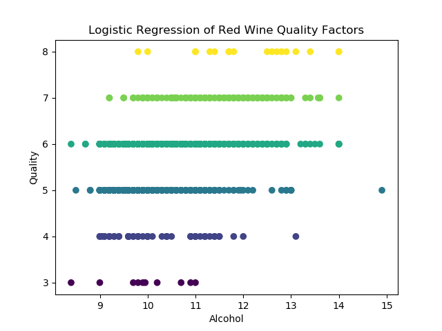

Logistic Regression is a statistical method for predicting binary outcomes from data. Examples of this are "yes" vs "no" or "young" vs "old". These are categories that translate to probability of being a 0 or a 1.
Alcohol content affects aroma and taste in critical ways, and the sugar content of the grapes determines alcohol content. Vintners test wine regularly and add water, sugar or fruit juice to control alcohol level, taste and other characteristics. If you have any doubts about alcohol being a key component of wine, just take a sip of “dealcoholized wine.” Alcohol content affects both flavor and texture, and it’s evaporating alcohol that carries the aroma of wine to our senses. Alcohol also adds viscosity and helps balance sweetness and acidity. On the other hand, too much can damp-down flavors and aromas, and make a wine seem “hot” on the palate.